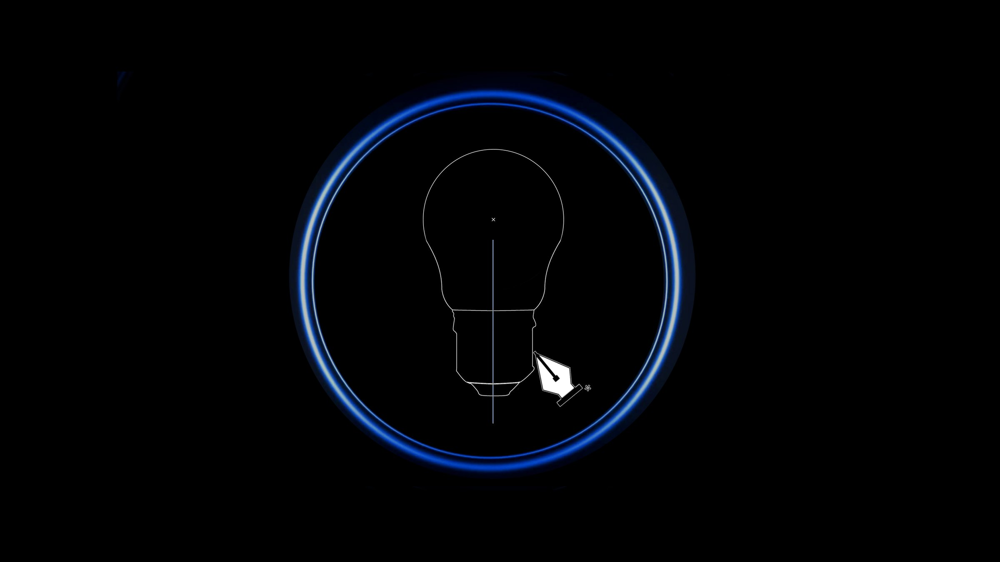
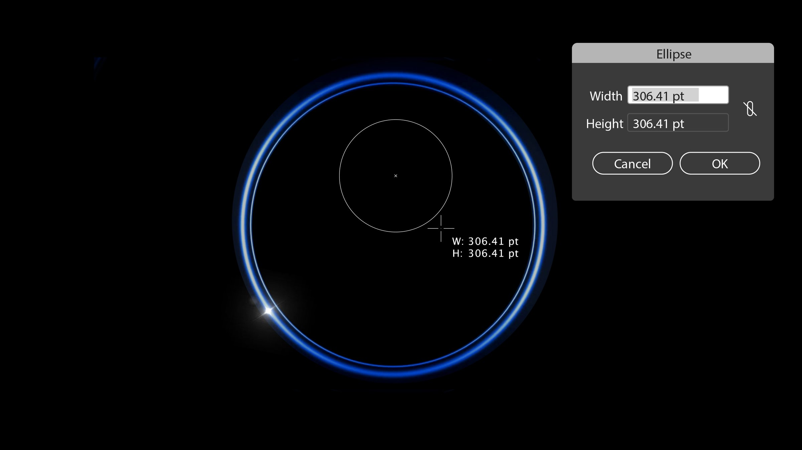
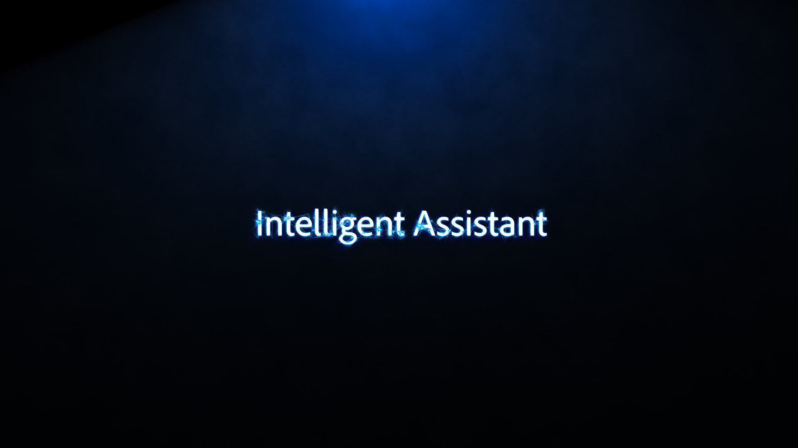

Adobe XD × Adobe Sensei
Motion design styleframes and title animation for two Adobe pieces in 2017: a sequence built around Adobe XD and a title package for Adobe Sensei.
The problem
The files cover motion work for two Adobe products: a sequence featuring the Adobe XD mark and drawing tools, and title animation for Adobe Sensei's capability names.
The approach
For the XD piece, the studio built styleframes on a black field framed by a glowing blue ring. Inside the ring, interface moments play out step by step: an ellipse being sized with a live dimensions dialog, a light bulb drawn with the pen tool as a vector outline, then the same bulb resolved as a rendered object. Supporting frames explore kinetic type, including a sliced "CUT" wordmark.
For Adobe Sensei, the work was a set of title options for the platform and its capability areas, including Intelligent Assistant, Computational Creativity, Content Intelligence, Experience Intelligence and Open Framework, with a write-on treatment set against a dark blue field.



Leadership
Directed the studio's motion design work for both Adobe pieces, from styleframes through animated title options.